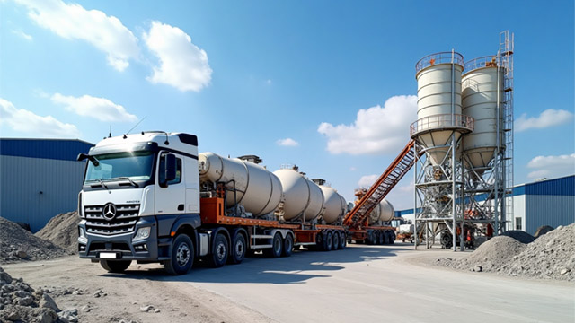

技术文章与行业动态
技术文章
济南混凝土搅拌站技术创新与发展
详细介绍济南混凝土搅拌站在设备升级、智能化控制、环保节能和质量管理等方面的技术创新，以及未来发展趋势。

2024年济南混凝土价格分析与市场趋势
全面分析济南混凝土价格影响因素，包括不同区域的价格差异，以及各种标号混凝土的价格走势和选购建议。
冬季混凝土浇筑施工技术指南
详细解析冬季混凝土施工的温度控制、配合比优化、养护措施等关键技术要点，助力工程质量提升。

2024年济南混凝土行业发展趋势分析
随着济南市城市建设的快速发展，混凝土行业迎来了新的发展机遇。本文从多个角度分析2024年济南混凝土行业的发展趋势，为建筑工程选材提供参考。

商品混凝土选型技术指南
详细介绍不同标号混凝土的特点和应用场景，包括抗压强度、抗渗性、和易性等性能指标，以及在济南各区域工程中的实际应用案例。

历下区某大型商业综合体混凝土供应案例
本案例详细介绍济南市历下区某大型商业综合体项目的混凝土供应情况。该项目是济南市2023年重点工程之一，总建筑面积超过20万平方米。

绿色混凝土技术创新与应用实践
探讨环保型混凝土材料的研发与应用，包括减少碳排放、提高资源利用率等创新技术，展示济南地区绿色建筑发展新趋势。

混凝土生产质量管理体系解析
详细介绍济南钧华商砼的质量管理体系，从原材料把控到生产过程监控，全方位保障混凝土产品质量。